Quantium Retail Analytics Final Report
Customer Patterns and Trial Layout Performance
As part of Quantium’s retail analytics team, we have been approached by our client Julia, the Category Manager for Chips, who wants to better understand the types of customers who purchase Chips and their purchasing behaviour within the region. She has also asked us to test the impact of the new trial layouts with a data driven recommendation to whether or not the trial layout should be rolled out to all their stores. We generated insights and provided commercial recommendations based on the provided data sets, identified benchmark stores based on two statistical measures to test the impact of the trial store layouts on customer sales, and presented a comprehensive client report in PowerPoint, introducing the actionable results and then getting into the why’s and how’s. In completion, we communicated statistical evidence to client, confirming the success of the trial layout, and recommended its deployment across all stores.
Note: This is a virtual experience project provided by theforage.com, done by Nguyen Tran.
For the full analysis with code, visit Task 1 and Task 2.
Introduction
Quantium has had a data partnership with a large supermarket brand for the last few years who provide transaction and customer data. We are responsible for delivering highly valued data analytics and insights to help the business make strategic decisions.
Supermarkets will regularly change their store layouts, product selections, prices and promotions. This is to satisfy their customer’s changing needs and preferences, keep up with the increasing competition in the market or to capitalize on new opportunities. The Quantium analytics team is engaged in these processes to evaluate and analyse the performance of change and recommend whether it has been successful.
Our client Julia has provided two data sets: customer transaction data and purchase behavior, spanning from July 2018 to June 2019 (to see what the data sets look like, visit Appendix A: Raw Data). We need to present a strategic recommendation to Julia that is supported by data which she can then use for the upcoming category review however to do so we need to analyse the data to understand the current purchasing trends and behaviors. The client is particularly interested in customer segments and their chip purchasing behavior. She has also asked us to evaluate the performance of a store trial which was performed in stores 77, 86 and 88, and provide data-driven recommendations on whether they should be implemented across all their stores. The trial period is from February 2019 to the end of April 2019.
Our approach for this client problem is broken down into three tasks:
- Data preparation and customer analytics
Conduct analysis on client’s transaction data set and identify customer purchasing behaviors to generate insights and provide commercial recommendations.
- Experimentation and uplift testing
Extend analysis from Task 1 to identify benchmark stores that allow us to test the impact of the trial store layouts on customer sales.
- Analytics and commercial application
Use analytics and insights from Task 1 and 2 to prepare a report for the client.
Methods
In this section, we go over what we did for each task.
Task 1
Data Cleaning
The first step in any analysis is to first understand the data. We looked at each of the data sets provided and found some data cleaning to do before exploring.
Examining transaction data: identified inconsistencies, no missing data, one outlier where 200 packets of chips are bought in one transaction (this customer has only had the two transactions over the year and is not an ordinary retail customer; the customer might be buying chips for commercial purposes instead; Thus, we removed these two transactions from further analysis), and items other than chips in product’s name column such as salsa products.
Examining customer data: checked for similar issues in the customer data, no missing data, merged the transaction and customer data together so it’s ready for the analysis.
Next, we dived into exploring the data.
Analysis on customer segments
- Defined the metrics of interest to the client
Who spends the most on chips (total sales), describing customers by lifestage and how premium their general purchasing behavior is?
How many customers are in each segment?
How many chips are bought per customer by segment?
What’s the average chip price by customer segment?
- Raised questions to our data team
The customer’s total grocery spend over the period and total spend for each chips transaction to understand what proportion of their grocery spend is on chips.
Proportion of customers in each customer segment overall to compare against the mix of customers who purchase chips.
- Created charts to visualize our findings
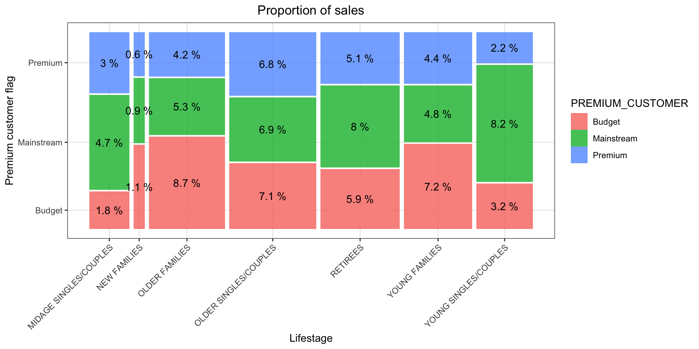
Sales are coming mainly from Budget - older families, Mainstream - young singles/couples, and Mainstream - retirees
Let’s see if the higher sales are due to there being more customers who buy chips.
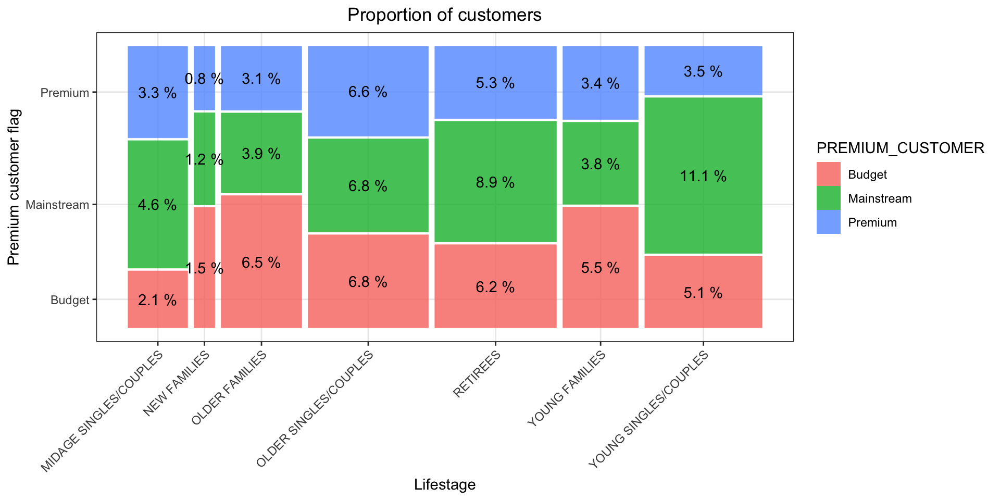
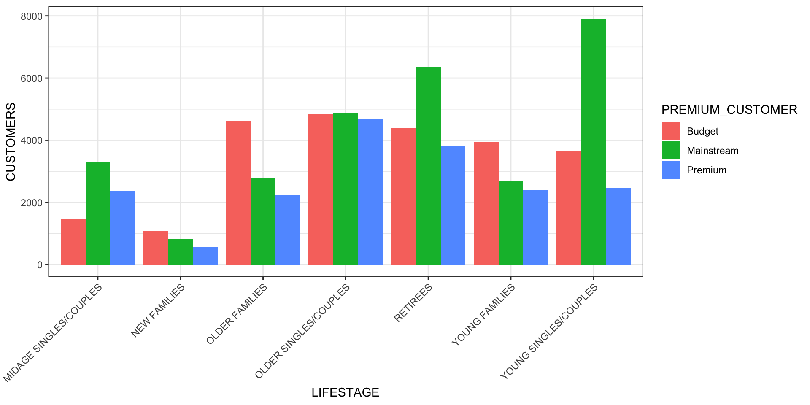
There are more Mainstream - young singles/couples and Mainstream - retirees who buy chips. This contributes to there being more sales to these customer segments but this is not a major driver for the Budget - Older families segment.
Higher sales may also be driven by more units of chips being bought per customer.
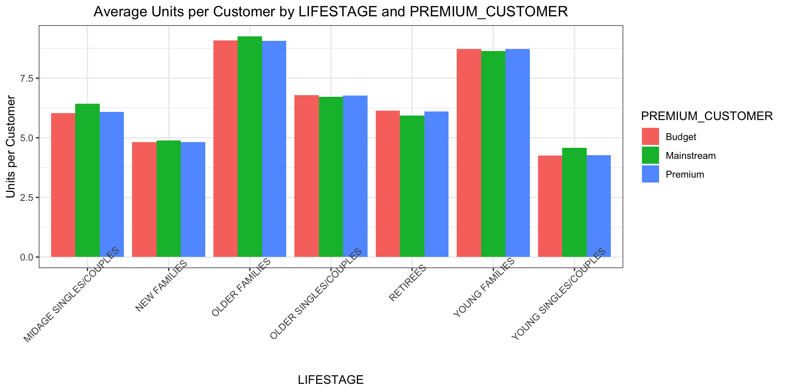
Older families and young families in general buy more chips per customer
What about the average price per unit chips bought for each customer segment as this is also a driver of total sales.
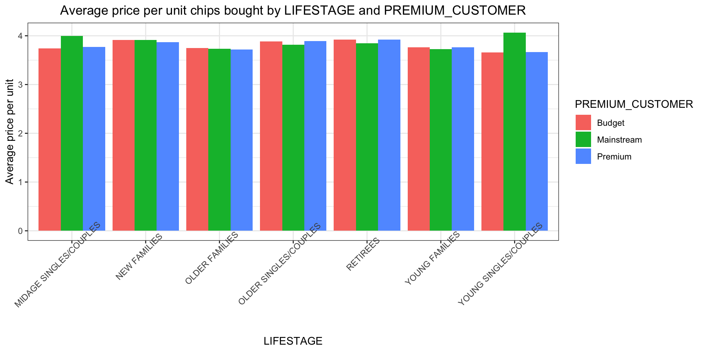
Mainstream midage and young singles and couples are more willing to pay more per packet of chips compared to their budget and premium counterparts. This may be due to premium shoppers being more likely to buy healthy snacks and when they buy chips, this is mainly for entertainment purposes rather than their own habit of consumption. This is also supported by there being fewer premium midage and young singles and couples buying chips compared to their mainstream counterparts.
As the difference in average price per unit isn’t large, we perform a t-test to see if this difference was statistically different.
Let mu_m be the mean unit price of mainstream midage and young singles and couples Let mu_pb be the mean unit price of premium and budget midage and young singles and couples
\(H_0:\) true difference in mu_m and mu_pb is equal to 0
\(H_a:\) true difference in mu_m and mu_pb is greater than 0
The t-test results in a p-value of 3.483677e-306, i.e. the unit price for mainstream, young and mid-age singles and couples ARE significantly higher than that of budget or premium, young and midage singles and couples.
Insights for specific customer segments
We have found quite a few interesting insights that we can dive deeper into.
We might want to target customer segments that contribute the most to sales to retain them or further increase sales. Let’s look at Mainstream - young singles/couples.
Do they tend to buy a particular brand of chips compared to other segments? We answered this with affinity analysis.
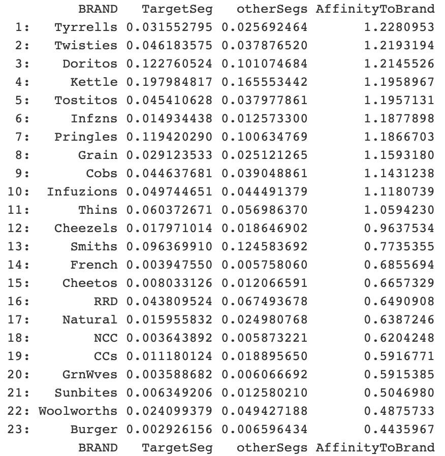
Mainstream young singles/couples are 23% more likely to purchase Tyrrells chips compared to the rest of the population
Mainstream young singles/couples are 56% less likely to purchase Burger Rings compared to the rest of the population
Let’s also find out if our target segment tends to buy larger packs of chips.
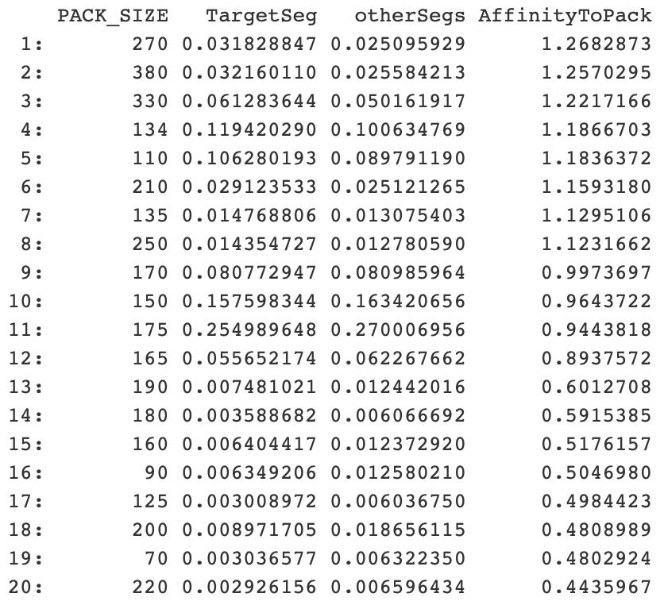
Mainstream young singles/couples are 27% more likely to purchase pack size of 270g compared to the rest of the population.
Mainstream young singles/couples are 56% less likely to purchase pack size of 220g compared to the rest of the population.
Furthermore, Twisties is the only brand that offers 270g pack size. This brand also comes in 2nd in our Brand Affinity analysis. This contributes to why our target segment buys a lot of this pack size.
Task 2
For this part of the project we examined the performance in trial vs control stores to provide a recommendation for each location based on our insight.
Control Store Selections
The client has selected store numbers 77, 86 and 88 as trial stores and want control stores to be established stores that are operational for the entire observation period.
We would want to match trial stores to control stores that are similar to the trial store prior to the trial period of Feb 2019 in terms of :
Monthly overall sales revenue
Monthly number of customers
Monthly number of transactions per customer
Thus, we created these metrics and filter to stores that are present throughout the pre-trial period.
Next, we needed to work out a way of ranking how similar each potential control store is to the trial store. The two metrics we decided to use are:
- Pearson correlations: how correlated the performance of each store is to the trial store.
- Magnitude distance: a standardized metric based on the absolute difference between the trial store’s performance and each control store’s performance. For more information on this metric, visit Appendix B: Magnitude distance.
We selected control stores based on how similar monthly total sales in dollar amounts and monthly number of customers are to the trial stores. So as we applied the two metrics, we would get four scores, two for each of total sales and total customers.
We then combined all the scores calculated by our two metrics to create a composite score to rank on.
We combined by taking a simple average of the correlation and magnitude scores for each driver. Note that if we consider it more important for the trend of the drivers to be similar, we can increase the weight of the correlation score (a simple average gives a weight of 0.5 to each metric) or if we consider the absolute size of the drivers to be more important, we can lower the weight of the correlation score.
Now, we would have a score for each of total number of sales and number of customers. We combined the two via a simple average.
The store with the highest score is then selected as the control store since it is most similar to the trial store.
Store 77 Assessment
For trial store 77, the control store is 233. We visualized to check if this is reasonable.
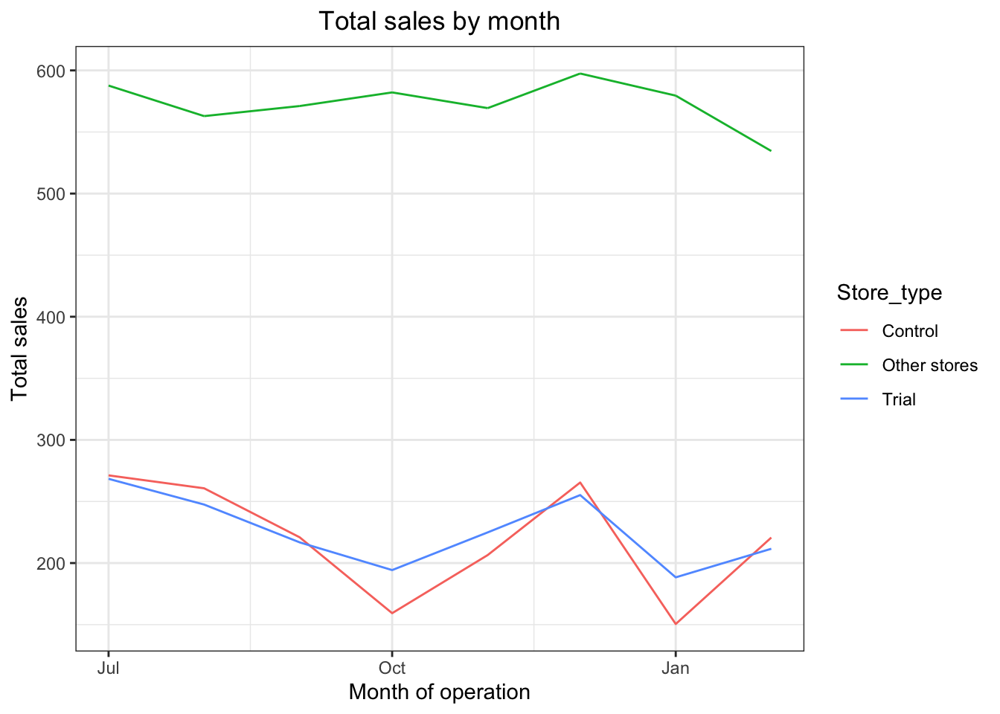
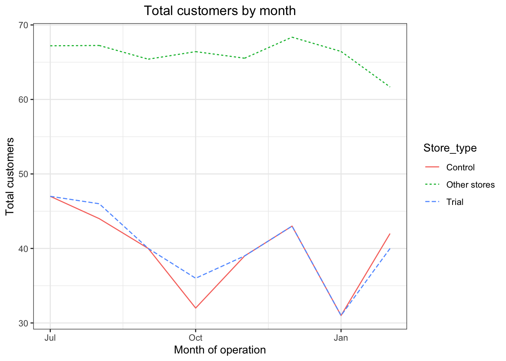
We plotted the sales of the control store, the sales of the trial stores and the 95th percentile value of sales of the control store.
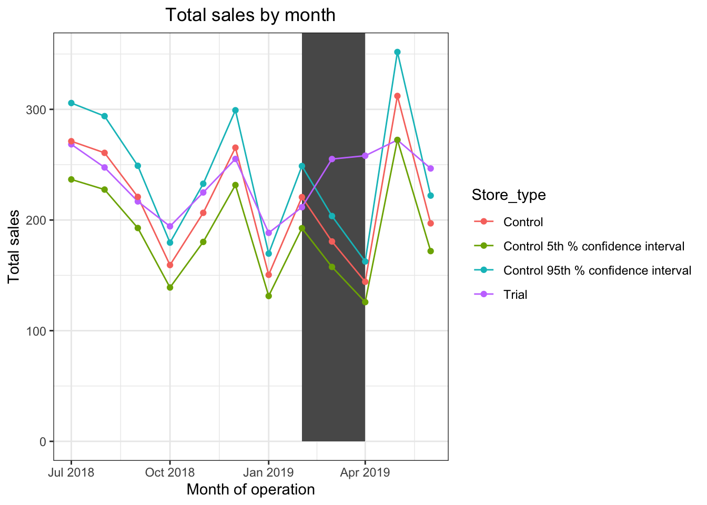
The results show that the trial in store 77 is significantly different to its control store in the trial period as the trial store performance lies outside the 5% to 95% confidence interval of the control store in two of the three trial months.
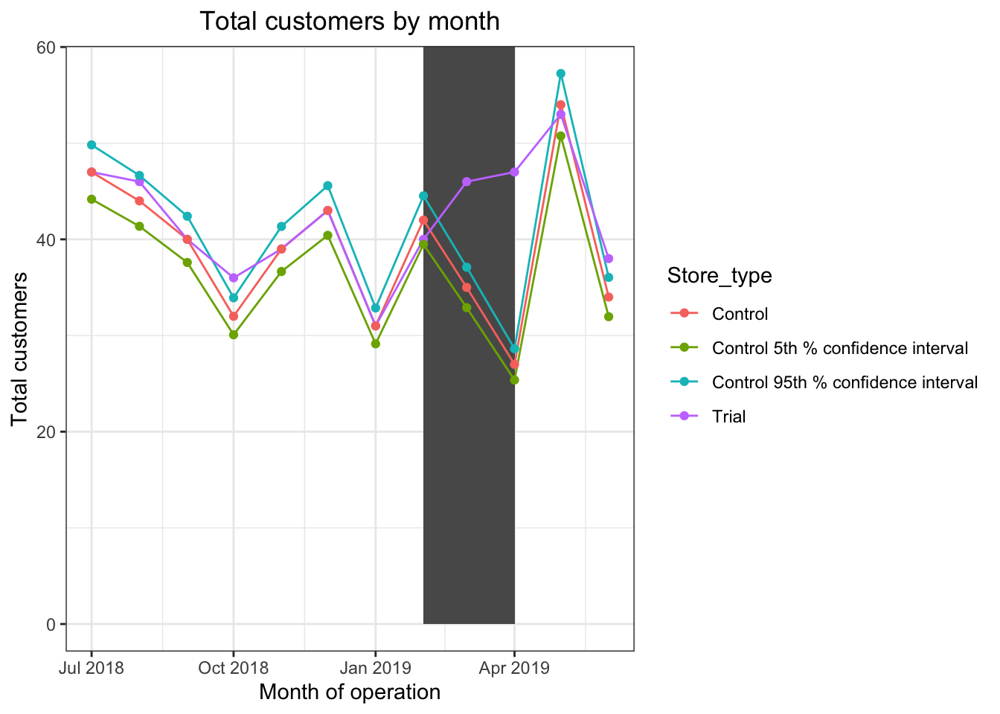
Store 86 Assessment
For trial store 86, the control store is 155.
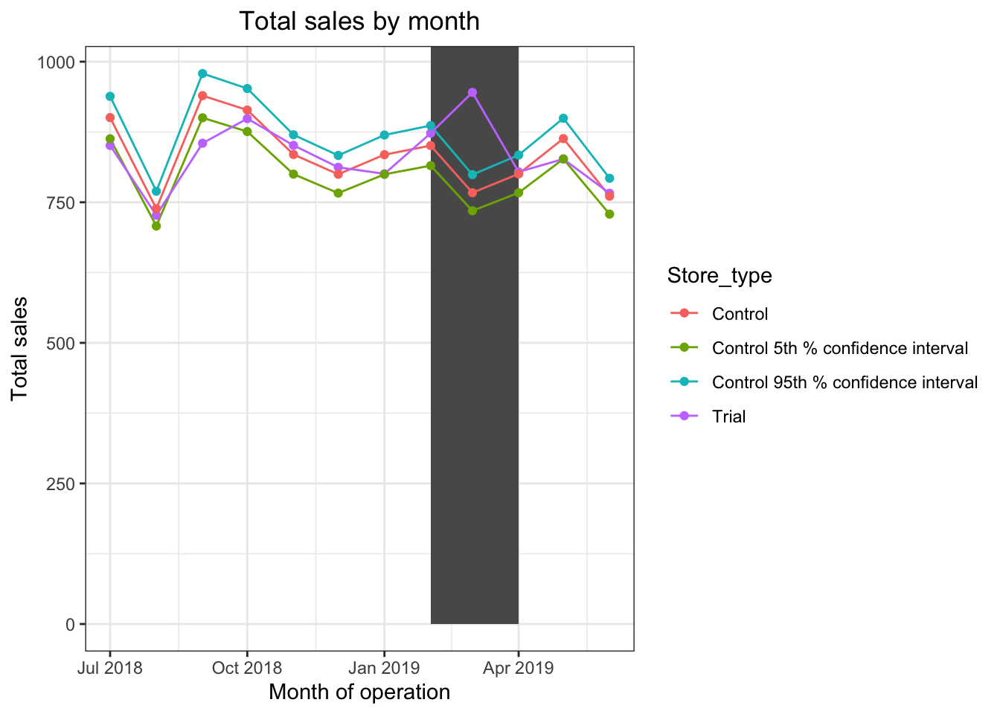
The results show that the trial in store 86 is not significantly different to its control store in the trial period as the trial store performance lies inside the 5% to 95% confidence interval of the control store in the two of the three trial months.
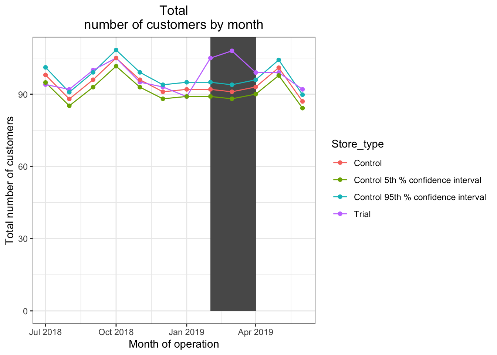
It looks like the number of customers is significantly higher in all of the three months. This seems to suggest that the trial had a significant impact on increasing the number of customers in trial store 86 but as we saw, sales were not significantly higher. We should check with the Category Manager if there were special deals in the trial store that were may have resulted in lower prices, impacting the results.
Store 88 Assessment
For trial store 88, the control store is 237.

The results show that the trial in store 88 is significantly different to its control store in the trial period as the trial store performance lies outside of the 5% to 95% confidence interval of the control store in two of the three trial months.
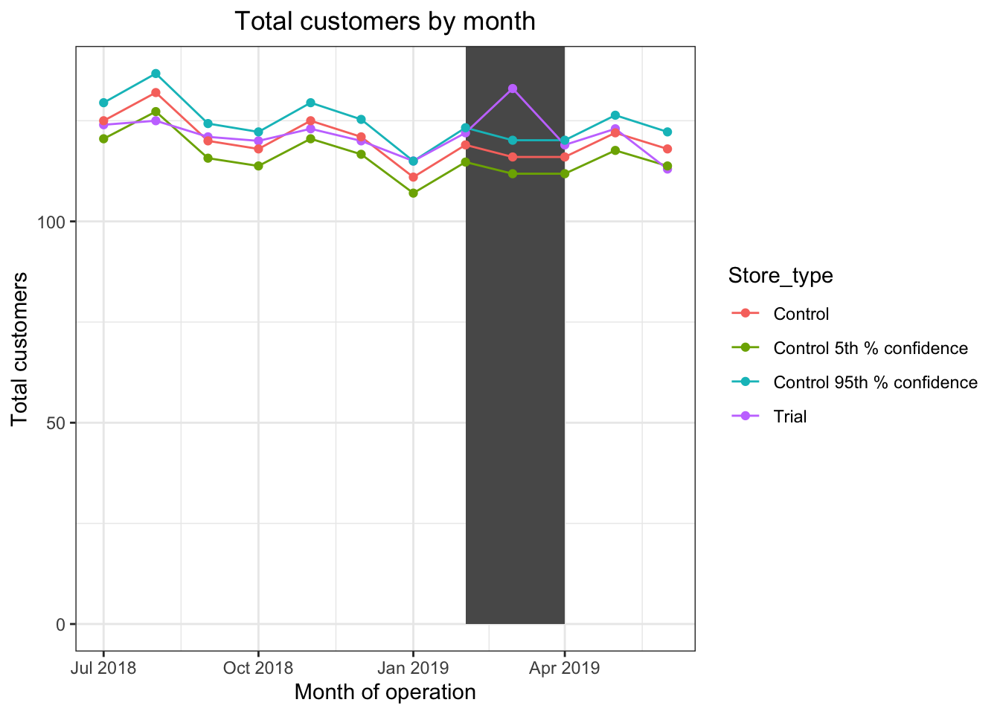
Total number of customers in the trial period for the trial store is not significantly higher than the control store for two out of three months, which indicates little to no effect by the trial.
Task 3
We created a client report in PowerPoint to provide commercial, actionable insights from our analysis and displayed it in a clear and concise way for your client, with minimal jargon. We followed the Pyramid Principles, getting at the actionable findings and what to implement first, then backing them up with explanations later on.
Conclusions
Task 1
Task 1 analysis serves as a precursor to more formal testing and analysis.
Sales have mainly been due to Budget - older families, Mainstream - young singles/couples, and Mainstream - retirees shoppers.
Although Budget - older families accounts for the largest proportion of sales (8.7%), the amount of customers in this segment (6.5%) is not as great as the Mainstream - young singles/couples (11.1%) and Mainstream - retirees shoppers (8.9%)
This implies the sales can be further improved in the two Mainstream - young singles/couples and Mainstream - retirees shoppers segments
We also found out the Mainstream - young singles/couples are among the segments that bought the least units of chips per customer. However, they are willing to spend the most on chips.
Notable mention is Mainstream - young singles/couples, who are also willing to spend more on chips than others.
This implies that the Mainstream - young singles/couples prefer higher quality chips and/or more popular brands. Their most preferred brands are Tyrrells, Twisties, Doritos, Kettle, and Tostitos
Mainstream young singles/couples are 27% more likely to purchase pack size of 270g
270g seems to be the ideal pack size for Mainstream young singles/couples. However, the only brand that provides this pack size is Twisties in this store. Perhaps, including more brands with 270g pack size is a potential step towards more sales.
Overall, we suggest an emphasis on the Mainstream - young singles/couples. One suggestion would be to have some Tyrrells chips near areas in the store that this target segment tends to visit the most.
Task 2
We’ve found control stores 233, 155, 237 for trial stores 77, 86 and 88 respectively.
The results for trial stores 77 during the trial period show a significant difference in at least two of the three trial months for both the total sales and number of customers metrics. Trial store 86 saw a statistically significant increase in customers but not total sales. Trial store 88 saw a statistically significant increase in sales but not customers.
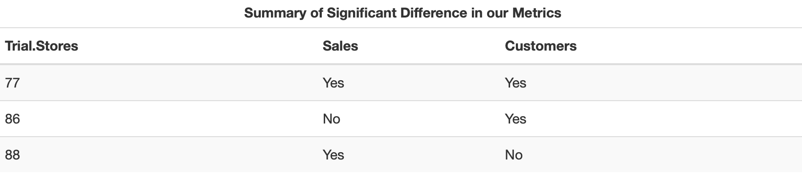
We can check with the client if the implementation of the trial was different in trial stores 86 and 88 but overall, the trial shows a positive effect on our metrics; two out of three stores had higher sales and two out of three stores also had higher number of customers. Now that we have finished our analysis, we can prepare our presentation to the Category Manager.
Task 3
In completion, we communicated statistical evidence to client, confirming the success of the trial layout, and recommended its deployment across all stores.
References
Appendix A: Raw Data
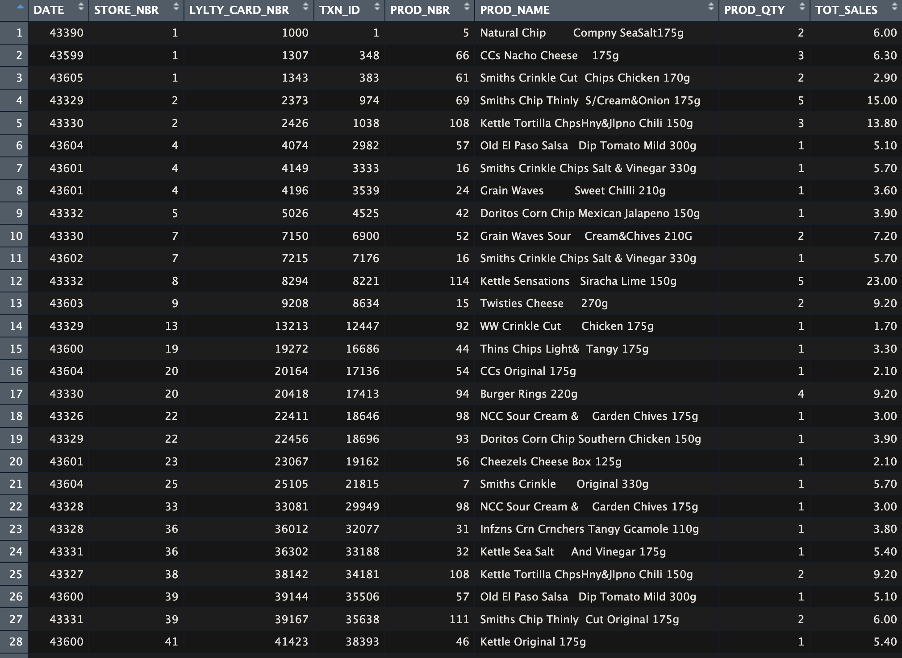
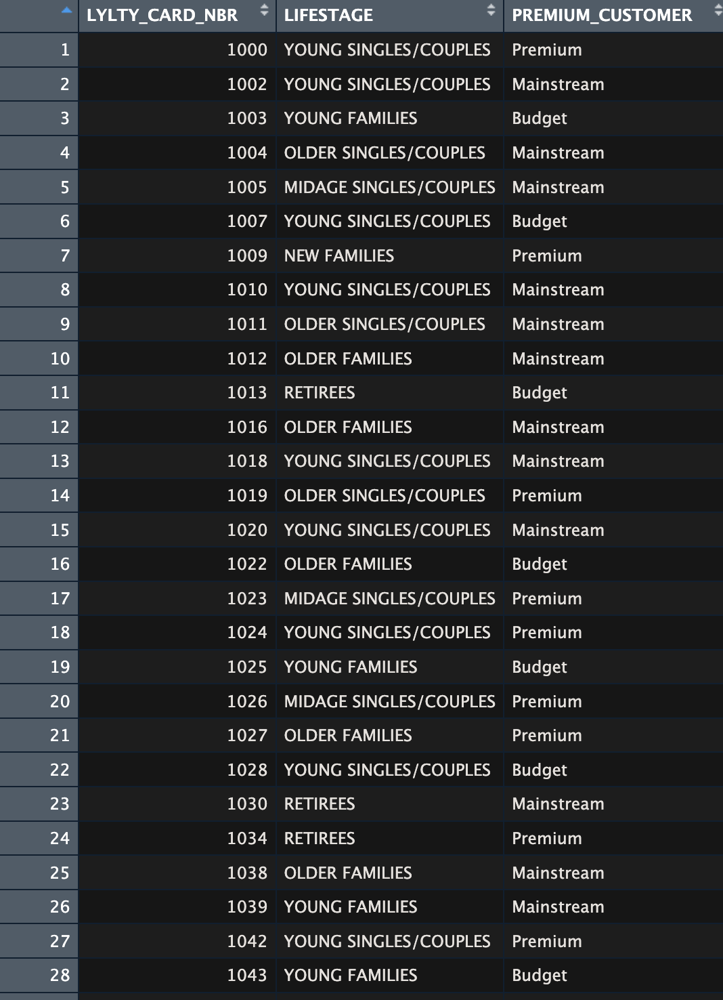
Appendix B: Magnitude distance
i.e. 1 - (Observed distance – minimum distance)/(Maximum distance – minimum distance)
The fraction (Observed distance - Minimum distance) / (Maximum distance - Minimum distance) represents the relative position of the observed distance within the entire range of possible distances.
By subtracting the fraction (Observed distance - Minimum distance) / (Maximum distance - Minimum distance) from 1, we obtain a value that reflects the similarity between the trial store and the control store.
- With (Observed distance - Minimum distance) / (Maximum distance - Minimum distance), the lowest measure means highest similarity
A value of 1 indicates maximum similarity (when the observed distance equals the minimum distance), while a value of 0 indicates minimum similarity (when the observed distance equals the maximum distance).